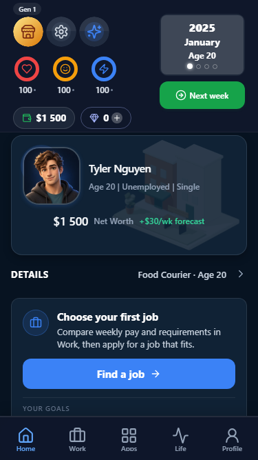
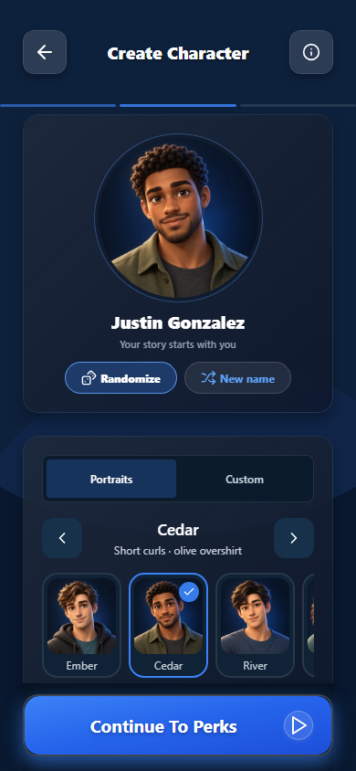
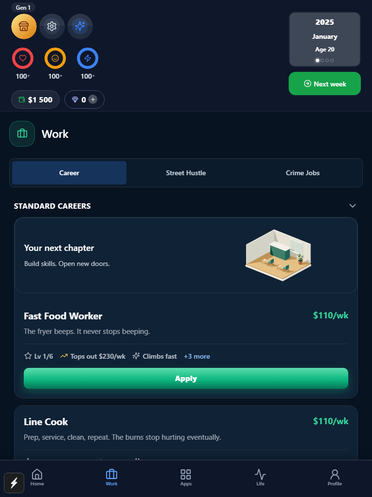
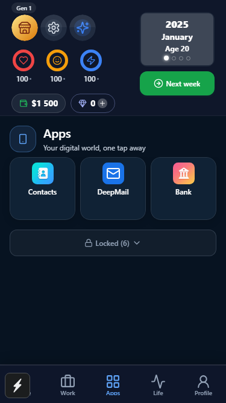
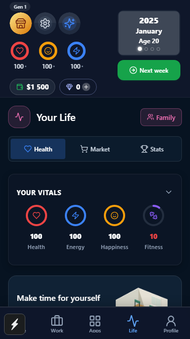
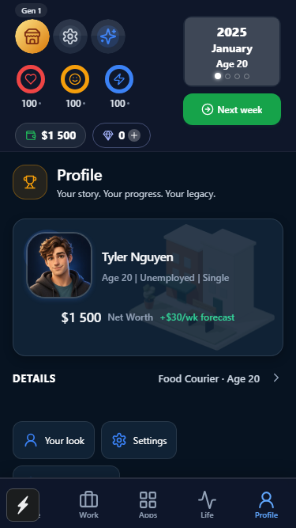
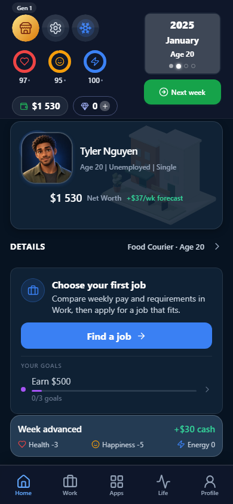
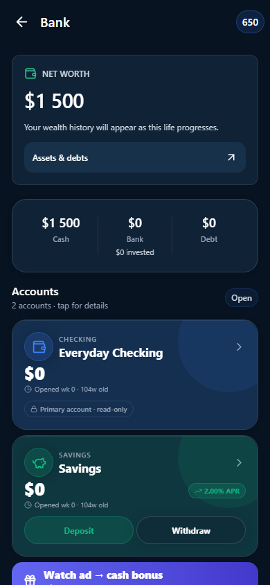
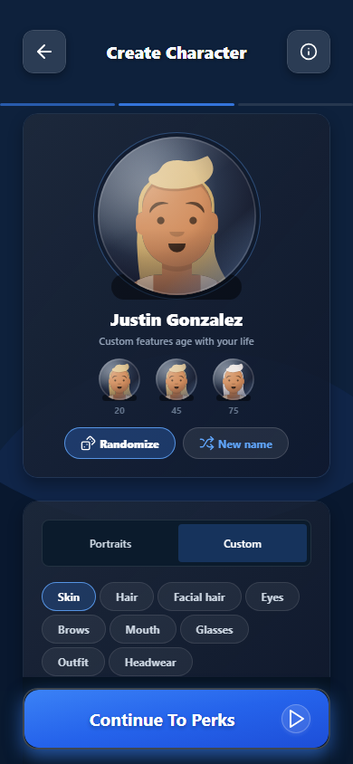

Home
Portrait hero, first-job guidance, five-tab navigation; approved HUD retained.

Character creator
Six curated portraits, preview, selection and randomization; custom creator retained.

Work on iPad
Original 3D cafe scene, shared opportunity card and corrected tablet scaling.

Apps
Consistent application tiles and explicit locked shelf. This is an early-life save.

Life
Consistent vitals and a new gym scene; activities continue below.

Profile
Portrait identity and access to appearance, settings and long-term progression.

Next Week
Cash and vital changes from the committed simulation.

Bank
Actual net worth, assets/debts access and an honest empty history state.

Custom character mode
Existing editable features and age previews remain available.
